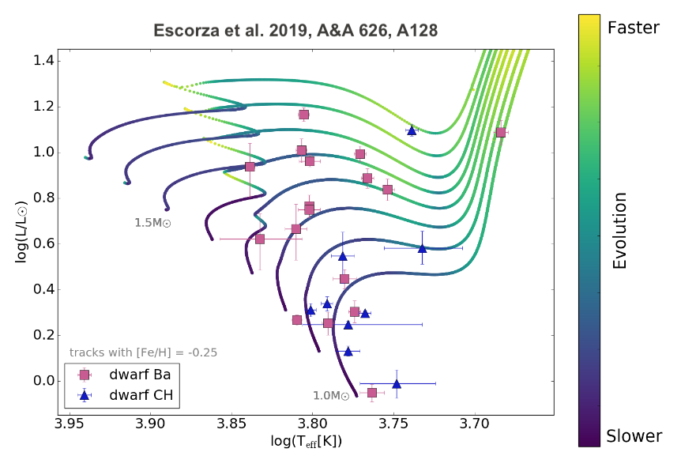
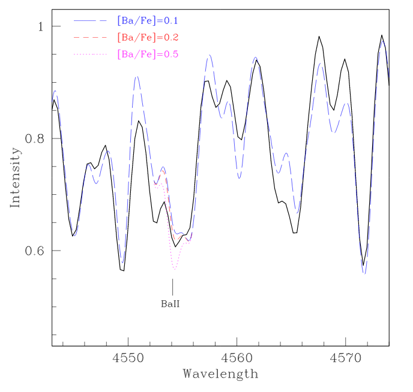

Barium stars


In recent years, thanks to the long-term monitoring of barium stars by my Belgian colleagues as well as the availability of Gaia DR2 data, we could obtain many orbits of these stars and embark on detailed statistical analysis. This is done here, here, and here.
Also related to barium stars are S stars, and I was lucky to be involved in the nice study of these stars by Drisya Karinkuzhi. In this paper, we compare barium and S stars with red giants in open clusters, while we also studied the binary properties of CH and carbon-enhanced metal-poor stars.


- A barium central star binary in the Type I diamond ring planetary nebula Abell 70
- A detailed study of the barium central star of the planetary nebula Abell 70
- A carbon dwarf wearing a Necklace
- Two rings but no fellowship
- SALT reveals the barium central star of the planetary nebula Hen 2-39
- Spectral analysis of the barium central star of the planetary nebula Hen 2-39
We have also found a connection between barium stars and symbiotic stars, as shown here and here.
Finally, I have written some reviews about wind mass transfer and barium stars, for example in this paper.